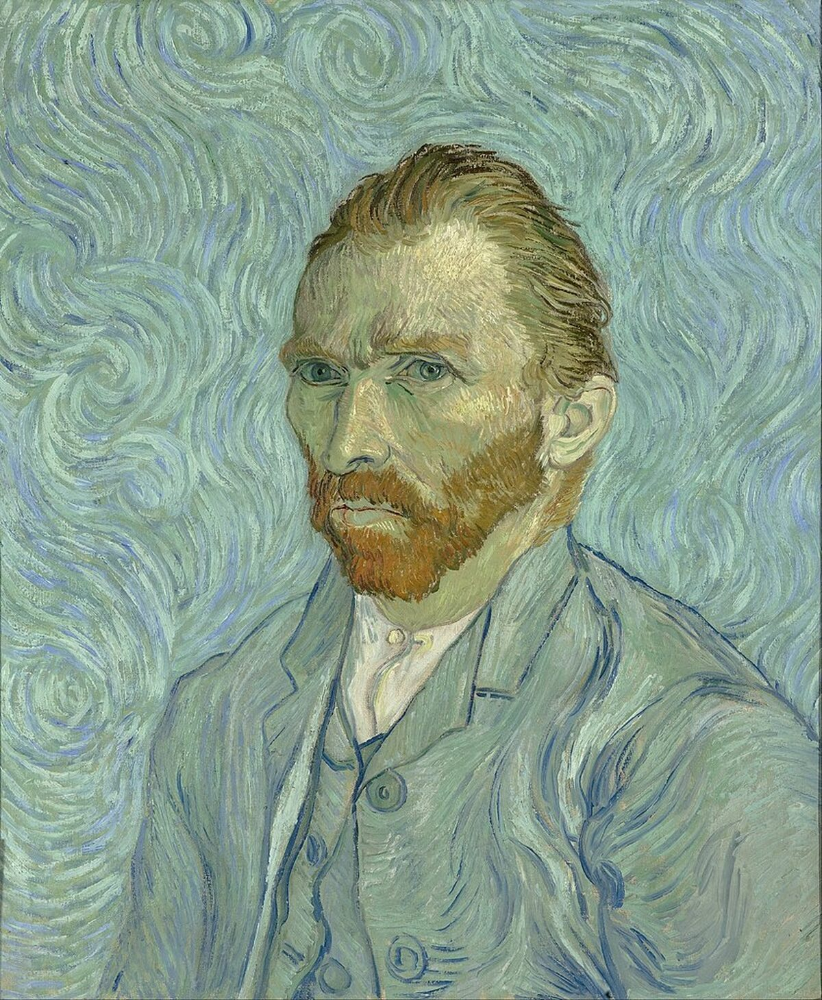
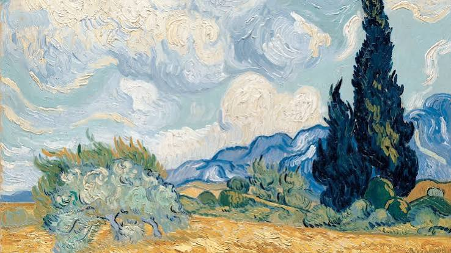
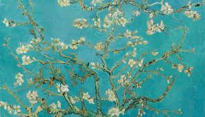

Bienvenue dans l'univers de Vincent van Gogh !
Vincent van Gogh est l'un des peintres les plus célèbres de l'histoire de l'art. Né aux Pays-Bas en 1853, il est connu pour ses tableaux expressifs, ses couleurs lumineuses et ses coups de pinceau uniques.
Malgré une vie difficile et une carrière artistique relativement courte, il a profondément marqué le monde de la peinture. Ses œuvres, comme La Nuit étoilée et Les Tournesols, continuent de fasciner des millions de personnes à travers le monde.
Explorez notre site pour découvrir sa vie, son talent et son héritage artistique.
« Je rêve de peindre et ensuite je peins mon rêve. » Vincent van Gogh
Découvrez les différentes pages
-

Biographie de Vincent van Gogh Découvrez son histoire et les grandes étapes de sa vie. -

Son style artistique Comprenez ses techniques, ses couleurs et ses inspirations. -
 Ses œuvres célèbres Explorez ses tableaux les plus connus.
Ses œuvres célèbres Explorez ses tableaux les plus connus. -

Son héritage artistique Découvrez son influence sur l'art moderne. -
Contact Contactez-moi pour toute question ou remarque.